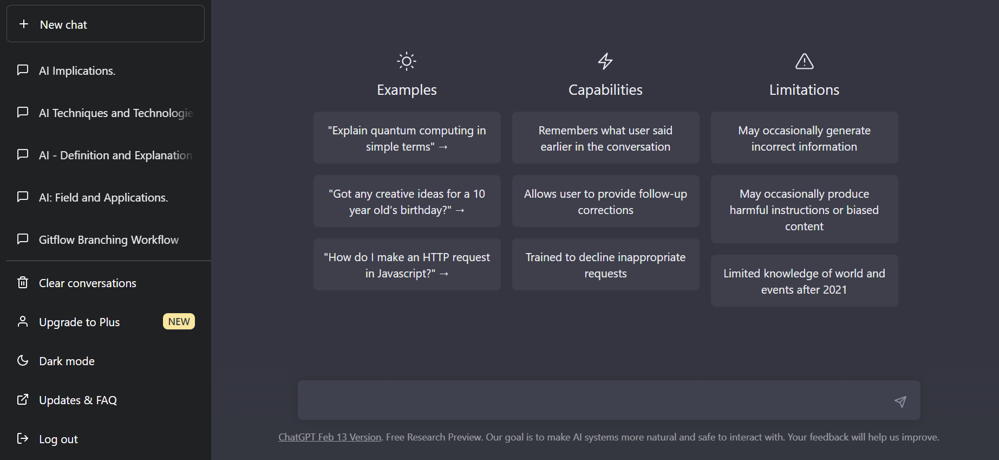

What is AI
AI stands for "Artificial Intelligence." It is a field of computer science that aims to create machines
that can perform tasks that typically require human-like intelligence, such as learning, reasoning, problem-solving,
perception, and decision-making.

AI involves developing algorithms and models that can learn from and make predictions or decisions based on large amounts
of data. There are various subfields of AI, including machine learning, natural language processing, computer vision,
robotics, and expert systems.
AI is increasingly used in a wide range of applications, including image and speech recognition, autonomous vehicles,
fraud detection, personalized medicine, and recommendation systems.

Image Source Here
Return to Index
AI today uses
AI today uses a wide range of techniques and algorithms to perform various tasks. Some of the most commonly
used AI techniques and technologies today include:
-
Machine learning: This involves training algorithms to make predictions or take actions based on patterns identified in data.
Supervised, unsupervised, and reinforcement learning are the most common types of machine learning.
Image Source Here
-
Natural Language Processing (NLP): This involves teaching computers to understand, interpret, and generate human language.
NLP is used in applications such as virtual assistants, chatbots, and sentiment analysis.
Image Source Here
-
Computer vision: This involves teaching computers to interpret and analyze visual data, such as images and video.
Computer vision is used in applications such as autonomous vehicles, facial recognition, and medical imaging.
Image Source Here
-
Robotics: AI is also used in robotics to enable machines to perceive and respond to their environments, learn from experiences,
and perform a wide range of tasks.
This is Atlas, a robot made by Boston Dynamics, if you want to know more about this Click Here
-
Recommendation systems: AI is used in recommendation systems to provide personalized recommendations to users based on their preferences,
history, and other data.
Image Source Here
-
Generative models: AI is also used in generative models to generate new content, such as images, music, and text.
The next image was generated by the IA Midjourney with just a few Keywords:

If you want to know more about Midjourney and how to use it Click Here
These are just a few examples of the many ways AI is used today, and new techniques and applications are constantly
being developed as the field of AI continues to evolve.
Return to Index
AI implications
AI has a number of implications for various aspects of society. Here are a few examples:
-
Employment: AI has the potential to automate many jobs, which could lead to job losses in some industries. On the other hand,
it may also create new job opportunities in fields related to AI, such as machine learning and data analysis. -
Privacy: The use of
AI can raise privacy concerns as it can collect, process and store vast amounts of personal data.
This could potentially lead to the misuse of personal information, such as identity theft, profiling, or even surveillance. -
Ethics: The use of AI raises ethical questions, especially around issues related to bias, fairness, and accountability. For example,
AI algorithms that are trained on biased data could lead to biased outcomes, such as facial recognition technology that struggles to accurately recognize people with darker skin tones. -
Healthcare: AI has the potential to revolutionize healthcare by helping doctors make more accurate diagnoses, developing new treatments, and improving patient outcomes.
However, there are also concerns around the accuracy and transparency of AI algorithms in healthcare. -
Security:
AI can be used for cybersecurity purposes, but it can also be used by malicious actors to develop more sophisticated attacks, such as deepfakes or social engineering techniques.

Image Source Here
Overall, AI has the potential to bring many benefits to society, but it is important to consider the implications and potential risks associated with its use. It is crucial that we develop and implement ethical frameworks
and regulations to ensure that AI is used in a responsible and safe manner.
Return to Index
How can you experiment AI today?
There are several ways you can experiment with
-
 ChatGPT
ChatGPT
ChatGPT is a large language model trained by OpenAI. It uses natural language processing (NLP) and machine learning algorithms to understand and respond to text-based questions and prompts from users.
It's purpose is to assist with various tasks, provide information, and engage in natural language conversations. It has been trained on a vast amount of text data, allowing me to generate responses that
are contextually relevant and grammatically correct.
This is ChatGPT's Interface:
All do you need is to create an OpenAI account, you can do it Here
-
 Midjourney
Midjourney
Midjourney is an Artificial intelligence program that creates images from textual descriptions or keywords.
If you want to know more about Midjourney, see a gallery with examples and learn how to use it for free Click Here
Return to Index